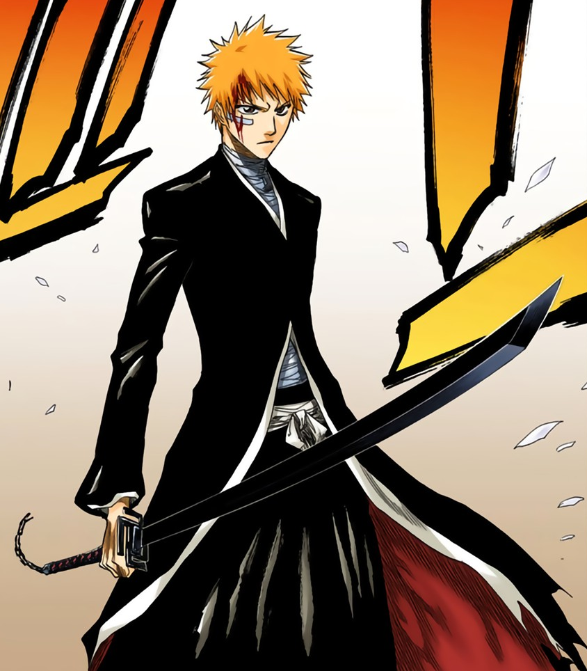
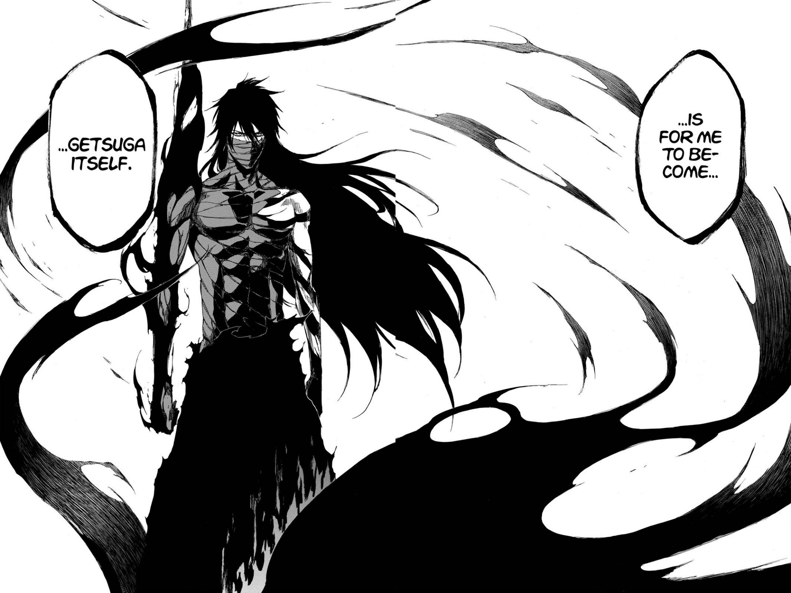
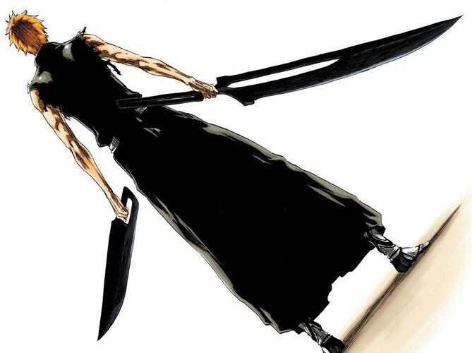
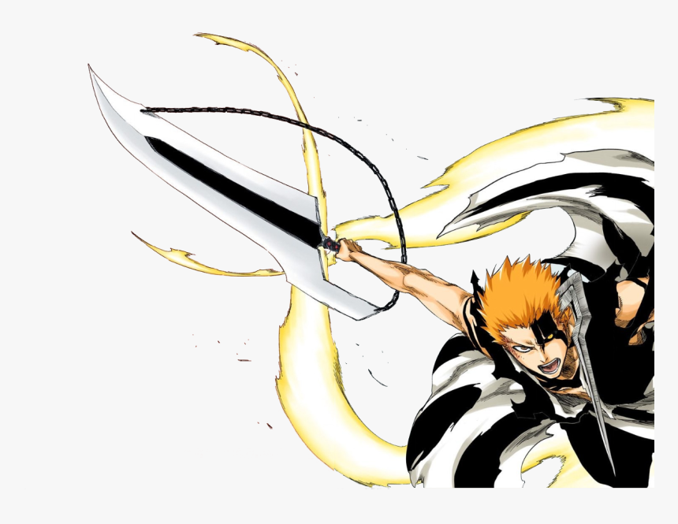

Tensa Zangetsu
Bankai original: Tensa Zangetsu
Forma verdadeira: duas lâminas (uma preta e uma branca)
A Bankai de Ichigo Kurosaki é chamada de Tensa Zangetsu. Ela representa uma evolução poderosa de sua Zanpakutō e aumenta significativamente sua velocidade, força e poder espiritual.
Quando Ichigo libera sua Bankai, sua grande espada muda completamente de aparência. Em vez de uma espada enorme, Tensa Zangetsu assume a forma de uma lâmina preta mais fina e compacta.
Apesar de parecer menor, a Bankai concentra o poder de Ichigo em seu corpo e em sua espada, permitindo que ele lute em uma velocidade muito maior.

Uma das principais técnicas de Ichigo é o Getsuga Tenshō. Ele concentra sua energia espiritual na espada e libera essa energia em forma de um poderoso ataque.
Com a Bankai, Ichigo consegue utilizar o Getsuga Tenshō com maior velocidade e potência, tornando a técnica ainda mais perigosa para seus adversários.
Durante uma de suas batalhas mais importantes, Ichigo aprende uma técnica extremamente poderosa chamada Mugetsu. Para utilizá-la, ele precisa alcançar uma forma especial relacionada ao seu treinamento para dominar o Getsuga Tenshō.
O ataque concentra uma enorme quantidade de poder espiritual em um único golpe. Depois de utilizá-lo, Ichigo perde temporariamente seus poderes de Shinigami.

Mais tarde, Ichigo descobre a verdadeira natureza de seus poderes. Sua Zanpakutō possui uma relação com suas diferentes origens: Shinigami, Hollow e Quincy.
Após descobrir sua verdadeira origem e reforjar sua Zanpakutō, Ichigo consegue acessar uma nova versão de sua Bankai. Essa forma representa a união de diferentes poderes dentro dele.

Durante a Guerra dos Mil Anos, Ichigo utiliza sua verdadeira Zanpakutō para enfrentar inimigos extremamente poderosos. Sua nova Bankai possui um enorme potencial, mas também acaba sendo alvo dos poderes de Yhwach.
Essa fase mostra o quanto Ichigo evoluiu desde o início da história, deixando de ser apenas um Shinigami substituto e passando a dominar diferentes aspectos de sua verdadeira força.

| Nome | Tensa Zangetsu |
|---|---|
| Tipo | Bankai |
| Usuário | Ichigo Kurosaki |
| Principal característica | Grande aumento de velocidade e poder |
| Técnica principal | Getsuga Tenshō |
| Forma especial | Mugetsu |
Início | Biografia | Poderes | Zangetsu | Família | Arcos | Bankai
Bankai original: Tensa Zangetsu
Forma verdadeira: duas lâminas (uma preta e uma branca)